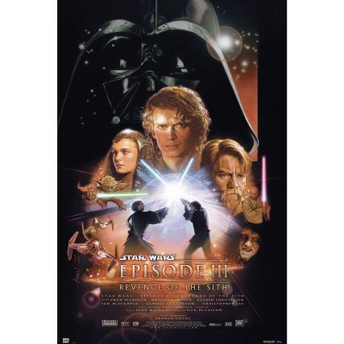

La revanche des Siths
La Guerre des Clones fait rage. Une franche hostilité oppose désormais le Chancelier Palpatine au Conseil Jedi.
Anakin Skywalker, jeune Chevalier Jedi pris entre deux feux, hésite sur la conduite à tenir.
Séduit par la promesse d'un pouvoir sans précédent, tenté par le côté obscur de la Force,
il prête allégeance au maléfique Darth Sidious et devient Dark Vador.
Les Seigneurs Sith s'unissent alors pour préparer leur revanche, qui commence par l'extermination des Jedi.
Seuls rescapés du massacre, Yoda et Obi Wan se lancent à la poursuite des Sith.
La traque se conclut par un spectaculaire combat au sabre entre Anakin et Obi Wan, qui décidera du sort de la galaxie.